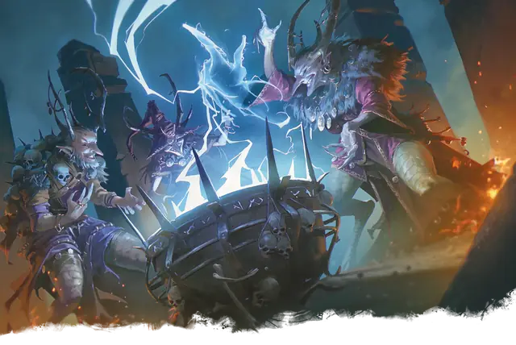

Архикарга
Arch-hag
Большая Фея, Нейтральная Злая

Класс Защиты 20 Инициатива +16 (26)
Хиты 333 (29к10 + 174)
Скорость 40 футов
| мод | спас | ||
|---|---|---|---|
| СИЛ | 24 | +7 | +7 |
| ЛОВ | 15 | +2 | +9 |
| ТЕЛ | 23 | +6 | +6 |
| мод | спас | ||
|---|---|---|---|
| ИНТ | 19 | +4 | +4 |
| МДР | 19 | +4 | +11 |
| ХАР | 25 | +7 | +7 |
Сопротивление урону Огонь, Психический, Холод
Иммунитеты Испуганный, Истощение, Очарованный
Чувства пассивное Восприятие 21, Истинное зрение 60 футов
Языки Все
Опасность 21 (33 000 опыта или 41 000 опыта в Логове; БВ +7)
Особенности
Магия ковена. Пока в пределах 30 футов от архикарги находится по меньше мере два её союзника, она может сотворить одно из следующих заклинаний, не нуждаясь в Материальных компонентах, используя обычную длительность сотворения заклинания (заклинательная характеристика — Интеллект; Сл спасброска заклинаний 19): Гадание, Обретение фамильяра, Опознание, Поиск объекта, Наблюдение или Невидимый слуга. Архикарга должна завершить Долгий отдых, прежде чем снова сможет использовать эту особенность для сотворения заклинания.
Легендарное сопротивление (4/день, или 5/день в Логове). Если архикарга проваливает спасбросок, она вместо этого может в нём преуспеть.
Сопротивление магии. Архикарга совершает с Преимуществом спасброски против заклинаний и прочих магических эффектов.
Мстительный побег. Когда Хиты карги опускаются до 0, она умирает только если находится в пределах 30 футов от своей анафемы (анафема — нечто самое ненавистное для карги, на выбор Мастера). В ином случае Хиты карги опускаются только до 1, и она телепортируется на безопасный демиплан; она не может вернуться на покинутый ею план в течение следующих 2к6 дней. После такой телепортации карги каждое существо в пределах 60 футов от покинутого ею пространства проклято. Проклятое существо совершает с Помехой броски характеристик и спасброски, а карга знает его местонахождение в мультивселенной.
Действия
Мультиатака. Архикарга совершает две атаки Призрачными когтями и использует Трескучую волну.
Призрачные когти. Бросок рукопашной или дальнобойной атаки: +14, досягаемость 10 фт. или дистанция 60 фт. Попадание: 17 (3к6 + 7) Силового урона. Если цель — существо Большого размера или меньше, она Опрокидывается.
Трескучая волна. Спасбросок Ловкости: Сл 22, каждое существо в 60-футовом Конусе. Провал: 32 (5к12) урона Электричеством. Успех: Только половина урона. Провал или успех: Цель проклята до конца следующего хода карги. Проклятая таким образом цель не может совершать Реакции.
Сотворение заклинаний. Архикарга сотворяет одно из следующих заклинаний, не нуждаясь в Материальных компонентах (заклинательная характеристика — Харизма, Сл спасброска заклинаний 22):
Неограниченно: Гипнотический узор, Обнаружение мыслей, Переносящая дверь, Рассеивание магии
2/день каждое: Изменение памяти, Множественное внушение, Планарный переход
Бонусные действия
Удар ведьмы. Каждое проклятое каргой существо в пределах 60 футов от неё получает 14 (4к6) урона Электричеством.
Реакции
Типун на язык. Карга сотворяет Контрзаклинание в ответ на условие этого заклинания (заклинательная характеристика — та же, что для Сотворения заклинаний). Если цель проваливает спасбросок против этого заклинания, она проклята до конца своего следующего хода. Проклятая таким образом цель не может сотворять заклинания с Вербальным компонентом, а также произносит противоположное тому, что хочет сказать.
Легендарные действия
У этого существа есть 3 использования Легендарных действий (или 4 использования в его Логове); оно может немедленно после окончания хода другого существа потратить одно использование, чтобы совершить одно из следующих действий. Существо восполняет все потраченные использования в начале каждого своего хода.
Замах карги. Карга совершает одну атаку Призрачными когтями.
Подлая магия. Карга использует Сотворение заклинаний (Переносящая дверь или Гипнотический узор). Карга не может совершить это действие повторно до начала своего следующего хода.
Бонус мастерства +7
Среда обитания Любая
Сокровища Магические
Архикарга
Ведьма запретных тайн и магического коварства
Бессмертные и непредсказуемые архикарги собирают тайны и заключают волшебные сделки, управляя судьбой согласно своей случайной прихоти. Эти вечные интриганы стремятся разгадать тайны мультивселенной и используют странную магию для достижения своих непостижимых целей.
Архикарги — непредсказуемые, эгоистичные и жадные существа, наделённые экстравагантными манерами и очарованием. Несмотря на это, они часто заключают сделки для претворения своих планов в жизнь. Эти карги служат источниками тайных знаний, особенно информации о запретной магии и тайнах мультивселенной. Они могут поделиться своими знаниями, но у этих секретов всегда есть цена. В обмен на свои тайны архикарги могут попросить выполнить особые поручения, достать ценные магические предметы или заплатить необычной валютой, например воспоминаниями, годом жизни или способностью плакать.
Большинство этих чудовищ избегают сражений, но, оказавшись прижатыми к стенке, они пускают в ход опасную магию: призрачные когти, дуговые молнии и завораживающие заклинания.
Архикарга может проклинать других заклинателей, заставляя их говорить противоположное тому, что они хотели сказать, и запутывать их речь. Даже потерпев поражение у неё всегда найдётся магический способ ускользнуть, после чего карга начнёт планировать свою месть.
У каждой архикарги есть уникальная слабость, с которой связана судьбоносная встреча в прошлом, или что-то, воплощающее противоположность её магии. Она готова на всё, чтобы сохранить свою уязвимость в секрете. И даже если эта слабость не может сама уничтожить архикаргу, она должна находится рядом с ней, чтобы положить конец её существованию. Совершите бросок по таблице «Анафема архикарги» для вдохновения или выберите сами слабость архикарги.
Анафема архикарги
| 1к10 | Слабость архикарги — это... |
| 1 | Кости первой любви архикарги. |
| 2 | Слеза дьявола. |
| 3 | Яйцо с миниатюрным замком внутри. |
| 4 | Цветок, распускающийся только при остановке времени. |
| 5 | Подарок от близнеца карги. |
| 6 | Худший каламбур в мультивселенной. |
| 7 | Один из выпавших зубов карги. |
| 8 | Снег с вершины Горы Целестии. |
| 9 | Упавшая с неба звезда. |
| 10 | Нитка из мантии Леди Боли. |
Логова архикарг
Каждая архикарга создаёт для себя волшебный дом, например тайный демиплан, особняк на вершине грозовой тучи или, как Баба-яга, избушка на гигантских курьих ножках. Интерьеры в этих логовах часто меняются или обладают удивительными особенностями.
Местность, в которой находится логово архикарги, изменяется из-за её присутствия, что создаёт следующие эффекты:
• Оговорка. Существа (за исключением карги и её союзников) в пределах 1 мили от логова вычитают 1к10 из любой проверки характеристик, когда они совершают действие Влияние.
• Назойливая магия. Каждый раз, когда существо, кроме самой карги и её союзников, завершает Долгий отдых в пределах 1 мили от логова, в следующий раз, когда оно сотворяет заклинание, используя ячейку заклинаний, оно также творит заклинание Смятение с центром на себе вместе со своим следующим заклинанием с тратой ячейки заклинания. Заклинание использует заклинательную характеристику существа и не требует Концентрации.
Если архикарга умирает или перемещает своё логово в другое место, все эти эффекты мгновенно исчезают.